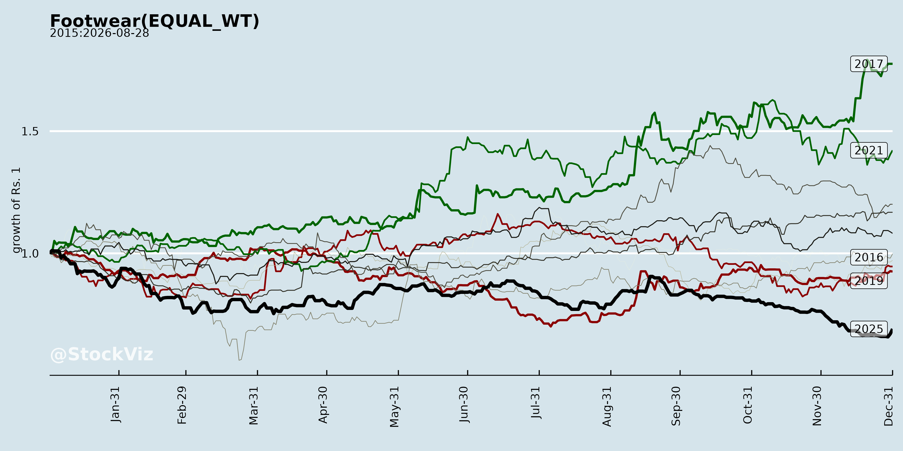
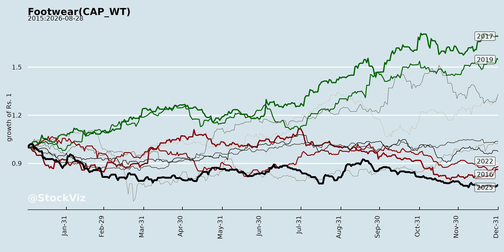
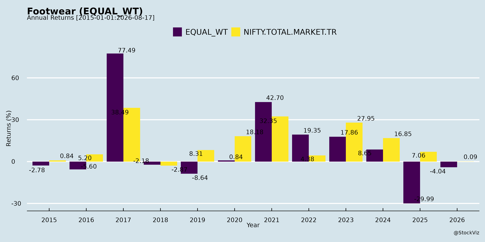
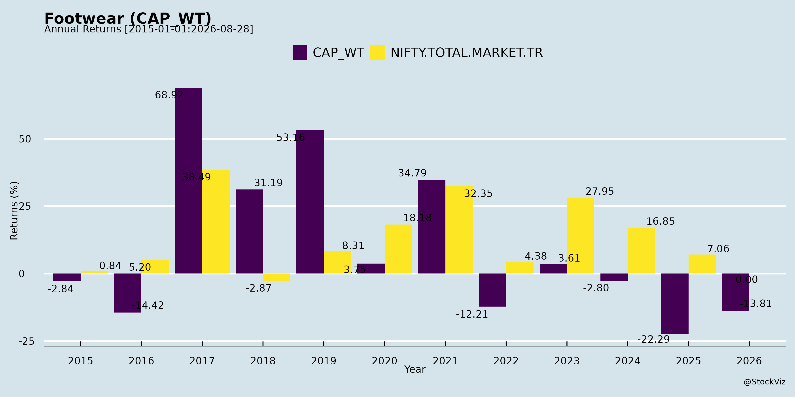
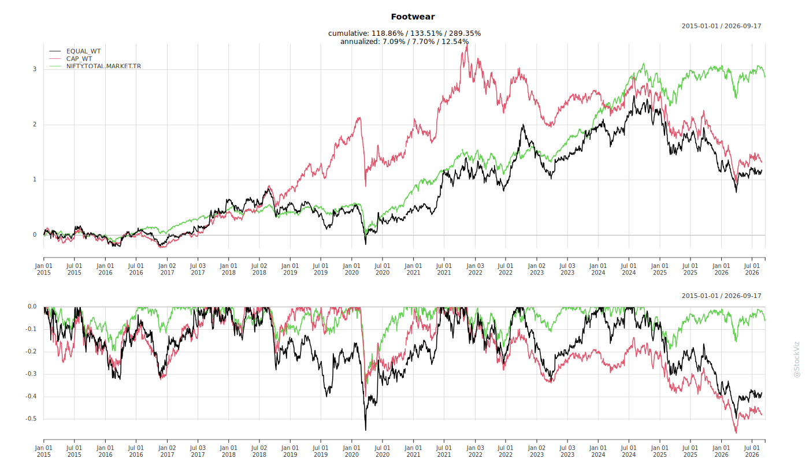
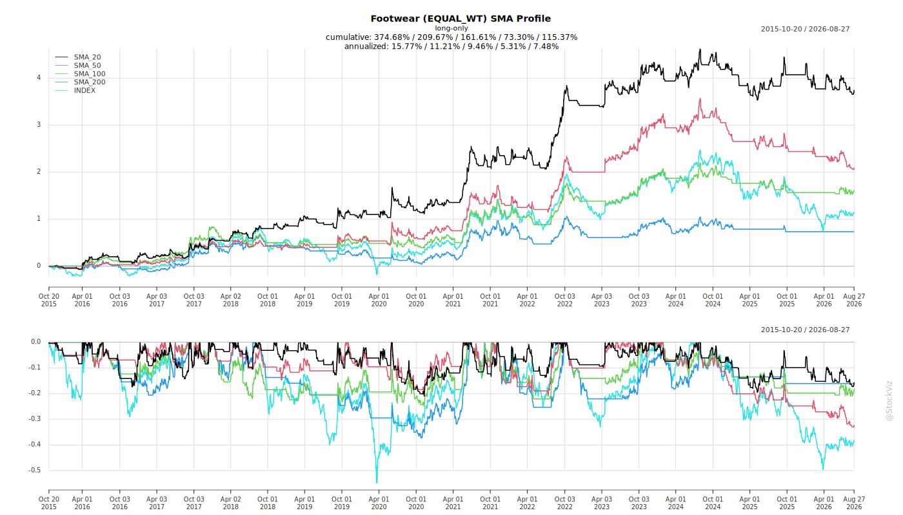
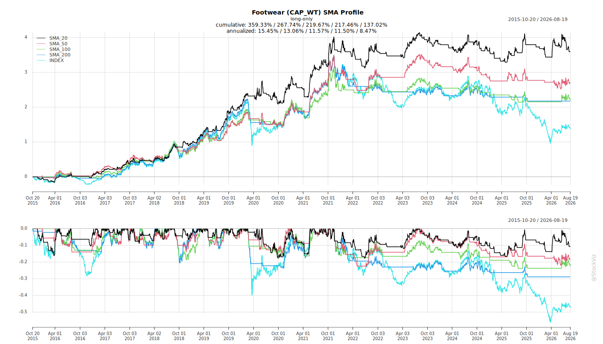
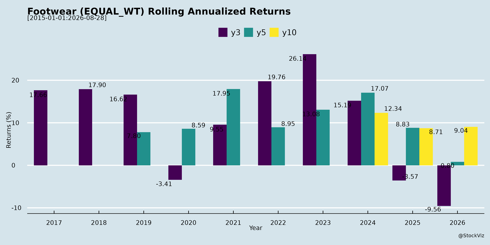
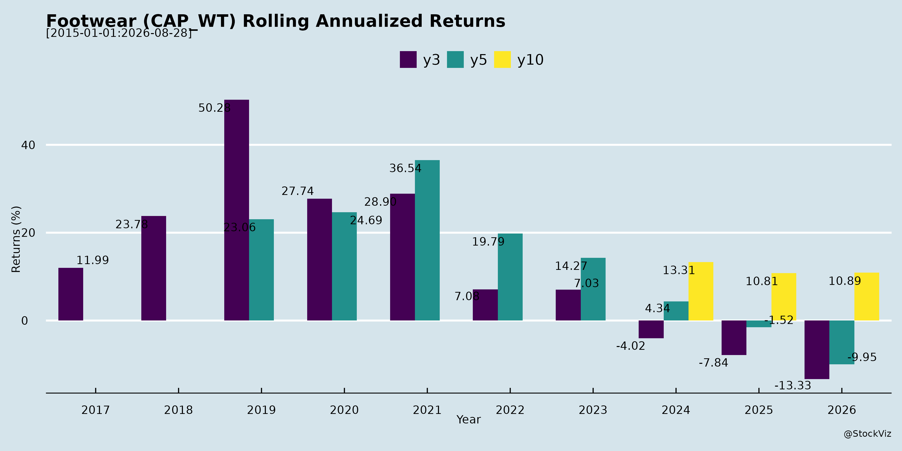

asof: 2025-11-27
The Indian footwear sector, dominated by mass/mid-market players (e.g., Bata, Campus, Khadim, Relaxo, RedTape), faced a challenging H1 FY26 marked by ~4-12% YoY revenue declines for most listed players. However, the GST rationalization (12%/18% to 5% for <INR 2,500 MRP, effective Sep 22, 2025) emerged as a pivotal structural positive. Insights from earnings transcripts reveal a mix of cyclical headwinds and emerging tailwinds, with organized players (~10-15% market share) poised for recovery via premiumization, channel optimization, and unorganized share gains. Below is a structured summary.
| Company | Q2 YoY Revenue | Normalized View | FY26 Guidance |
|---|---|---|---|
| Bata | -4% | Flat | Expansion-led growth |
| Campus | +16% | Strong (distro +20%) | Double-digit |
| Khadim | -7% | H2 recovery | 7-8% FY26 |
| Relaxo | -7.5% | Q4+ growth | Better than FY26 |
| RedTape | +15% (implied) | Seasonal uptick | 20% YoY target |
Overall Outlook: Cautiously optimistic – GST unlocks volume tailwinds, but Q3 muted (0-5% growth). FY27+ revival to 10-15% industry growth via organized share gains (target: 20%+). Premium/innovation focus mitigates mass weakness; monitor Q3 primaries/inverted duty for confirmation. Bull case: 15%+ CAGR; Bear: prolonged destock delays recovery to FY28.
asof: 2025-11-27
Indian Footwear Sector Analysis
Based on announcements from Bata, Campus, Khadim, Liberty, Metro Brands, RedTape, Relaxo, and Sreeleathers (primarily Q2 FY26 insights from RedTape transcript, compliance filings, and strategic disclosures).
Tailwinds (Positive Factors)
Headwinds (Challenges)
Growth Prospects
Key Risks
| Risk Category | Details | Mitigation (from docs) |
|---|---|---|
| Regulatory | Tax raids (RedTape: Sep 2025, no penalties yet); KYC/BIS delays. | Full cooperation; proactive filings. |
| Supply Chain | Vendor dependence, backward integration lags, inventory days up. | Contract manufacturing scale; new warehouses. |
| Competition/Margins | Deep discounts hurt positioning; e-com commissions (same as offline). | Premium tech/products; 60-day repeat cycles. |
| Execution | Store breakeven 12-34 months; non-performers closed (lease liability down). | Franchise-heavy; scatter expansion. |
| Macro | Raw material inflation, muted winters (FY25), export slowdowns. | Cost efficiency programs; domestic focus. |
Overall Summary: Indian footwear sector enjoys strong tailwinds from GST relief, consumption shift, and expansion (20%+ growth feasible for leaders like RedTape), but headwinds from competition, supply glitches, and margins cap near-term profitability (EBITDA ~16-18%). Prospects brightest in Tier 2/3 omni-channel and premium categories; risks center on execution amid regulatory/competitive pressures. Sector resilient but selective outperformance expected for agile players with strong retail footprint.
asof: 2025-11-27
The analysis is derived from earnings calls and disclosures of key players: Bata India, Campus Activewear, Khadim India, RedTape Limited, and Relaxo Footwears. These represent a mix of mass-market (Bata, Relaxo, Khadim), premium/sports (Campus), and lifestyle/value (RedTape) segments. Common themes include GST disruptions, channel dynamics, premiumization, and recovery optimism. Industry trends show muted H1 growth (declines of 4-8% for most mass players), but differentiated performance in premium.
| Risk | Likelihood/Impact | Mitigants |
|---|---|---|
| Prolonged Destocking | High/Medium | Secondary sales up (Relaxo +20%); Dec-Jan normalization. |
| Inverted Duty/Margins | Medium/Medium | GST refunds; price discipline (full pass-through). |
| Competition | High/High | Unorganized/fakes/D2C (Zudio/Yousta); new entrants in sneakers. |
| Consumer Weakness | Medium/High | Inflation/rural slowdown. |
| Execution | Medium/Medium | Inventory freshness (Bata), store profitability (RedTape 12-34 months breakeven). |
| External | Low/Medium | Raw material volatility, forex (imports 18% GST). |
The Indian footwear industry (~INR1.2L Cr, 10% organized) faced acute headwinds in H1 FY26 from GST transition (channel deferrals, 4-8% declines) and mass-segment weakness, but tailwinds from GST cuts (5% slab) are emerging, leveling the field vs unorganized (previously tax-advantaged). Growth prospects are strong: mass volume revival + premiumization (sneakers/women) could drive 10-20% CAGR FY27+, fueled by expansions (500-1,000 stores/player), festive tailwinds, and exports. Key risks center on destocking delays (Q3 muted) and competition, but manageable via efficiencies (margins stable 12-14%). Overall, cautious optimism—industry inflection post-Dec FY26, with premium leaders (Campus/RedTape) outperforming mass (Bata/Relaxo/Khadim). Organized penetration to accelerate to 30-35% by FY28.
asof: 2025-11-27
Indian Footwear Sector Analysis (Based on Q2/H1 FY26 Announcements from Bata, Campus, Relaxo; FY25 from Liberty; Metro Brands Initiative)
Headwinds (Challenges Observed)
Tailwinds (Supportive Factors)
Growth Prospects
Key Risks
Overall Summary: Q2 FY26 was transitionary with revenue dips (mass-led), but resilient margins and premium growth signal underlying strength. GST 2.0 tailwind positions organized players for H2 rebound, with premium/athleisure as key drivers (Campus outperformer at +16% revenue). Prospects bright via expansion/digital, but risks hinge on demand normalization. Sector cautiously optimistic, targeting sustainable profitable growth.
Copyright © 2023 SAS Data Analytics Pvt. Ltd. All rights reserved.